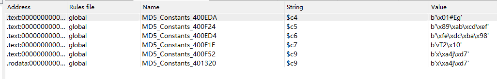

GFSJ0382-【first】
线程问题 爆破
main 我进行了简单的命名 能看到
__int64 __fastcall main(int a1, char **a2, char **a3)
{
__useconds_t *v3; // rbp
unsigned int v4; // eax
int *v5; // rcx
int v6; // edx
unsigned int v7; // eax
signed __int64 v8; // rcx
__int64 v9; // rax
char v10; // bl
char v11; // dl
void (**v12)(void *); // rbp
char *v13; // r12
pthread_t *v14; // r13
void (*v15)(void *); // rdi
unsigned __int64 i; // rcx
char v17; // al
int *v18; // rdx
int v19; // esi
unsigned int v20; // eax
unsigned __int64 v21; // rdx
char *v22; // rax
char *v23; // rdx
char v24; // di
v3 = useconds;
v4 = time(nullptr);
srand(v4); // 获取当前时间当作随机数种子
do
*v3++ = 100 * (rand() % 1000);
while ( v3 != (__useconds_t *)&unk_602208 );
__isoc99_scanf("%63s", input);
v5 = input;
do
{
v6 = *v5++;
v7 = ~v6 & (v6 - 16843009) & 0x80808080;
}
while ( !v7 );
if ( (~v6 & (v6 - 16843009) & 0x8080) == 0 )
{
v7 >>= 16;
v5 = (int *)((char *)v5 + 2);
}
v8 = (char *)v5 - ((char *)input + __CFADD__((_BYTE)v7, (_BYTE)v7) + 3);
v9 = 0;
v10 = 0;
while ( v8 != v9 )
{
v11 = *((_BYTE *)input + v9) + v9;
++v9;
v10 ^= v11;
}
v12 = (void (**)(void *))&newthread;
v13 = nullptr;
v14 = &newthread;
do
{
if ( pthread_create(v14, nullptr, (void *(*)(void *))start_routine, v13) )// 创造6个线程
{
perror("pthread_create");
exit(-1);
}
++v13;
++v14;
}
while ( v13 != (char *)6 );
do
{
v15 = *v12++;
pthread_join((pthread_t)v15, nullptr);
}
while ( &free != v12 );
for ( i = 0; ; byte_60221F[i] = v10 ^ byte_6020DF[i] ^ v17 )
{
v18 = input;
do
{
v19 = *v18++;
v20 = ~v19 & (v19 - 16843009) & 0x80808080;
}
while ( !v20 );
if ( (~v19 & (v19 - 16843009) & 0x8080) == 0 )
{
v20 >>= 16;
v18 = (int *)((char *)v18 + 2);
}
v21 = (char *)v18 - ((char *)input + __CFADD__((_BYTE)v20, (_BYTE)v20) + 3);
if ( v21 <= i )
break;
v17 = *((_BYTE *)flag + i++);
}
if ( v21 )
{
if ( (unsigned __int8)(LOBYTE(flag[0]) - 48) > 0x4Au )
{
LABEL_28:
puts("Badluck! There is no flag");
return 0;
}
v22 = (char *)flag + 1;
v23 = (char *)(v21 + 6300192);
while ( v22 != v23 )
{
v24 = *v22++;
if ( (unsigned __int8)(v24 - 48) > 0x4Au )
goto LABEL_28;
}
}
__printf_chk(1, "Here is the flag:%s\n", (const char *)flag);
return 0;
}
有一个点要注意 此处进行的操作等同于strlen 他这个是位运算优化写法
v5 = input;
do
{
v6 = *v5++;
v7 = ~v6 & (v6 - 16843009) & 0x80808080;
}
while ( !v7 );
if ( (~v6 & (v6 - 16843009) & 0x8080) == 0 )
{
v7 >>= 16;
v5 = (int *)((char *)v5 + 2);
}
然后能看到创造了6个线程 执行了线程函数start_routine 然后往下看能看到一个xor
byte_60221F[i] = v10 ^ byte_6020DF[i] ^ v17
再网上追踪能看到v10 由用户输入异或得出来
v8 = (char *)v5 - ((char *)input + __CFADD__((_BYTE)v7, (_BYTE)v7) + 3);
v9 = 0;
v10 = 0;
while ( v8 != v9 )
{
v11 = *((_BYTE *)input + v9) + v9;
++v9;
v10 ^= v11;
}
然后再去看线程函数 函数里面我也进行了简单命名 能看到进行了md5加密
unsigned __int64 __fastcall start_routine(void *a1)
{
__int64 v1; // rbp
int v2; // ebx
__useconds_t v3; // edi
__int64 v4; // rbx
int v5; // eax
__int64 v6; // rdx
_QWORD v8[3]; // [rsp+0h] [rbp-38h] BYREF
unsigned __int64 v9; // [rsp+18h] [rbp-20h]
v1 = (int)a1;
v2 = (int)a1;
v3 = useconds[(int)a1];
v9 = __readfsqword(0x28u);
v4 = v2;
usleep(v3);
pthread_mutex_lock(&mutex);
md5(&input[v4], 4u, (__int64)v8);
v5 = dword_6021E8;
v6 = dword_6021E8;
if ( v8[0] == qword_602120[v1] )
flag[v6] = input[v4];
else
flag[v6] = 0;
dword_6021E8 = v5 + 1;
pthread_mutex_unlock(&mutex);
return __readfsqword(0x28u) ^ v9;
}
md5 那为什么是md5呢 我们拿到题目先看看有哪些加密参数嘛 对不对 能看到标准的md5加密

unsigned __int64 __fastcall md5(void *src, size_t n, __int64 a3)
{
size_t v3; // rbx
size_t i; // rax
size_t v5; // rbp
char *v6; // rdx
char *v7; // rax
size_t v8; // r15
int v9; // r14d
__int64 v10; // rax
int v11; // r13d
int v12; // ebp
__int64 j; // rax
int v14; // r11d
int v15; // r10d
int v16; // r8d
int v17; // r12d
char v18; // bl
__int64 v19; // r9
int v20; // ecx
unsigned int v21; // esi
int v22; // edi
__int64 v23; // rax
int v24; // edx
int v25; // eax
int v27; // [rsp+4h] [rbp-A4h]
char *ptr; // [rsp+8h] [rbp-A0h]
size_t v29; // [rsp+10h] [rbp-98h]
_DWORD v31[18]; // [rsp+20h] [rbp-88h]
unsigned __int64 v32; // [rsp+68h] [rbp-40h]
v3 = n + 1;
v32 = __readfsqword(0x28u);
if ( (((_BYTE)n + 1) & 0x3F) == 0x38 )
{
v5 = n + 1;
ptr = (char *)malloc(n + 9);
memcpy(ptr, src, n);
ptr[n] = 0x80;
v6 = &ptr[v3];
}
else
{
for ( i = n + 1; ; ++i )
{
v5 = i + 1;
if ( (((_BYTE)i + 1) & 0x3F) == 0x38 )
break;
}
ptr = (char *)malloc(i + 9);
memcpy(ptr, src, n);
ptr[n] = 0x80;
if ( v3 >= v5 )
{
v6 = &ptr[v5];
}
else
{
v6 = &ptr[v5];
v7 = &ptr[v3];
do
*v7++ = 0;
while ( v7 != v6 );
}
}
v29 = v5;
v8 = 0;
v27 = -1732584194;
v9 = 1732584193;
*(_WORD *)v6 = 8 * n;
v6[3] = (unsigned int)(8 * n) >> 24;
v6[2] = (unsigned int)n >> 13;
v10 = (__int64)&ptr[v5 + 4];
*(_WORD *)v10 = n >> 29;
*(_BYTE *)(v10 + 3) = n >> 53;
*(_BYTE *)(v10 + 2) = n >> 45;
v11 = -271733879;
v12 = 271733878;
do
{
for ( j = 0; j != 16; ++j )
v31[j] = *(_DWORD *)&ptr[v8 + j * 4];
v14 = v12;
v15 = v27;
v16 = v11;
v17 = v9;
v18 = 1;
v19 = 0;
LOBYTE(v20) = 7;
v21 = 0;
v22 = -680876936;
while ( 1 )
{
if ( v21 <= 0xF )
{
v23 = v21;
v24 = v14 ^ v16 & (v14 ^ v15);
}
else if ( v21 <= 0x1F )
{
v23 = v18 & 0xF;
v24 = v15 ^ v14 & (v15 ^ v16);
}
else if ( v21 > 0x2F )
{
v24 = v15 ^ (v16 | ~v14);
v23 = (7 * (_BYTE)v21) & 0xF;
}
else
{
v24 = v14 ^ v15 ^ v16;
v23 = (3 * (_BYTE)v21 + 5) & 0xF;
}
++v21;
++v19;
v18 += 5;
v25 = v16 + __ROL4__(v17 + v31[v23] + v24 + v22, v20);
if ( v21 == 64 )
break;
v22 = MD5_Constants_401320[v19];
v20 = dword_401220[v19];
v17 = v14;
v14 = v15;
v15 = v16;
v16 = v25;
}
v9 += v14;
v11 += v25;
v27 += v16;
v12 += v15;
v8 += 64LL;
}
while ( v29 > v8 );
free(ptr);
*(_WORD *)a3 = v9;
*(_BYTE *)(a3 + 4) = v11;
*(_BYTE *)(a3 + 2) = BYTE2(v9);
*(_BYTE *)(a3 + 3) = HIBYTE(v9);
*(_BYTE *)(a3 + 12) = v12;
*(_BYTE *)(a3 + 5) = BYTE1(v11);
*(_BYTE *)(a3 + 7) = HIBYTE(v11);
*(_BYTE *)(a3 + 6) = BYTE2(v11);
*(_DWORD *)(a3 + 8) = v27;
*(_BYTE *)(a3 + 13) = BYTE1(v12);
*(_BYTE *)(a3 + 14) = BYTE2(v12);
*(_BYTE *)(a3 + 15) = HIBYTE(v12);
return __readfsqword(0x28u) ^ v32;
}
然后接着往下看 输入的数据给到v8 然后v8再跟qword_602120进行比较那我们都知道了v8进行了md5加密 那我们提取数据拿出来然后找网站进行解密就可以了www.somd5.com/ 由于程序读取的是大端序 所以我们要提取大端序的东西
数据
4746bbbd02bb590f,beac2821ece8fc5c,ad749265ca7503ef,4386b38fc12c4227,b03ecc45a7ec2da7,be3c5ffe121734e8
转换
'juhu', 'hfen', 'laps', 'iuer', 'hjif', 'dunu'
但同时我们能看到每个线程前面会随机 usleep 所以线程写入 flag 的顺序不是固定的 那我们又不知道是哪些线程先执行 有挺多的方法吧 可以在flag[v6] = input[v4];处下断点 然后每次停下看v6是多少 写入了哪四个字节 就能直接得到顺序 也可以爆破 最后得出的顺序是[0, 1, 2, 5, 4, 3]
exp
chunks = [b"juhu", b"hfen", b"laps", b"iuer", b"hjif", b"dunu"]
input_data = b"".join(chunks)
key = 0
for i, b in enumerate(input_data):
key ^= (b + i) & 0xff
enc = bytes.fromhex(
"fee9f4e2f1faf4e4f0e7e4e5"
"e3f2f5efe8fff6f4fdb4a5b2"
)
order = [0, 1, 2, 5, 4, 3]
pre_flag = b"".join(chunks[i] for i in order)
flag = bytes([
pre_flag[i] ^ enc[i] ^ key
for i in range(len(pre_flag))
])
print(flag.decode())
flag
goodjobyougetthisflag233
评论